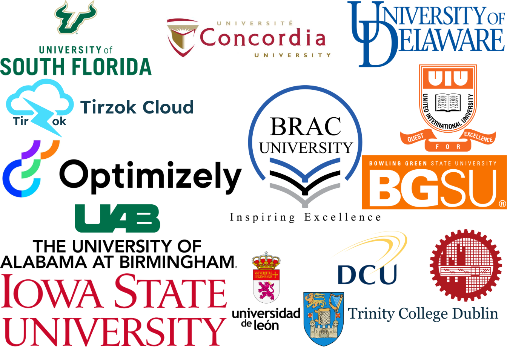
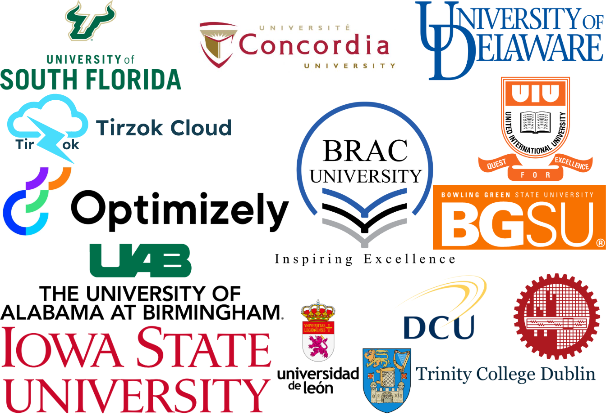

Hello, I am Joyanta!
I am from Dhaka, Bangladesh; a graduate student in Computer Science
at The University of Delaware.
My research interests include Deep Learning, Cloud Computing, and Human-Computer Interaction.
A core vision that drives my work is to solve problems and design cost-effective and practical solutions for social welfare and sustainability utilizing cutting-edge technologies.
At present, as a dedicated researcher, I am actively engaged in exploring different projects that allow me to delve deeper into the areas that captivate my interest. I have co-authored several conference papers and presented my research papers in different
well-reputed conferences. My researches have been published in premier journals (Nature Scientific Reports, IEEE TCC) and conferences (WACV, IJCNN, COMPASS). In addition to doing research, I have the experience
of actively participating as a reviewer in the peer-review process of research papers at different confernce (NeurIPS, ICLR, CHI) and journal (ACM JCSS). Also, I have been honored with several research awards
covering participation grants, travel grants, etc.
I actively try to engage and contribute to open-source projects as a way to give back to the broader research and developer community, promoting collaboration, transparency, and the dissemination of practical tools and ideas.
Outside of my academic interests, I love to play games, watch TV Shows and anime. I love immersing myself in the virtual worlds of my favorite video games
and challenging my friends to epic battles. I am also a big fan of outdoor activities and try to go cycling whenever I get the chance.
I am excited to collaborate on new projects! Feel free to email me to discuss any opportunities. And if you are seeking mentorship where I may be able to provide some guidance based on my small knowledge, send me a brief email introducing yourself and the area you'd like my help in.
One fun fact about me: I make tea the British way: with dignity, ceremony, and complete uncertainty about what I’m doing.
- Jul 25: Paper on novel mamba-based architecture model to work on gastrointestinal polyp segmentation accepted at Computer Vision for Automated Medical Diagnosis (CVAMD @ ICCV 2025 🌺)!
- May 25: Paper on novel two-step image generation model inspired by the conditional diffusion model to prevent copyright infringement accepted at IFIP International Summer School on Privacy and Identity Management!
- May 25: Awarded Quality Journal Publication Award from BRAC University!
- Apr 25: Paper on Combination of a Graph Convolutional Network (GCN) with a Transformer architecture to predict CB2 receptor ligand activity accepted at IJCNN!
- Mar 25: Invited as a reviewer in NeurIPS 2025!
- Jan 25: Paper on Tailoring Adversarial Attacks using ET DeepFool accepted at Nature Scientific Reports!
- Dec 24: Selected for the NSF-funded NRT-MIDAS fellowship program!
- Oct 24: Paper on Involution Fused ConvNet for Classifying Eye-Tracking Patterns of Children with Autism Spectrum Disorder accepted at EAAI!
- Sep 24: Invited as a reviewer in NeurIPS 2024 Workshop on Foundation Model Interventions (MINT 2024)!
- Aug 24: Started my graduate studies at The University of Delaware!
- May 24: Paper on novel content-based searching approach in object storage cloud system accepted at IEEE Access!
- Feb 24: Invited as a reviewer in ACM Conference on Computer-Supported Cooperative Work and Social Computing 2024!
- Dec 23: Paper on Air Quality Index Prediction using Smartphone Images accepted at Nature Scientific Reports!
- Oct 23: Attended as a judge in Fall 2023 Undergradute Research Expo at University of Alabama at Birmingham!
- Nov 23: Paper on Fog-Resilient Bangla Car Plate Recognition accepted at 1st WACV 2024 Workshop on Vision-Based Understanding for Low-Resource Languages (WVLL)!
- Oct 23: Invited as a reviewer in 1st WACV 2024 Workshop on Vision-Based Understanding for Low-Resource Languages (WVLL)!
- Oct 23: Invited as a reviewer in ACM CHI conference on Human Factors in Computing Systems 2024!
- Sept 23: Invited as a reviewer in Twelfth International Conference on Learning Representations (ICLR) 2024!
- Aug 23: Started my graduate studies at The University of Alabama at Birmingham (UAB)!
- Jul 23: Paper on exploring factors of the uprising of contractual rides compared to ride-sharing app system in Bangladesh accepted at ACM COMPASS 2023!
- Apr 23: Invited as a reviewer in NeurIPS 2023!
- Mar 23: Awarded Blazer Graduate Research Fellowship by The University of Alabama at Birmingham (UAB) Graduate School!
- Feb 23: My first Op-Ed published in The Daily Star! [Link]
- Feb 23: Visited Bangladesh Atomic Energy Commission (AEC) for possible research collaboration. [Link]
- Jan 23: Completed my undergraduate studies from BRAC University!
- Jan 23: Selected as a reviewer in ACM JCSS Journal!
- Dec 22: Research Poster on AQI Detection from Smartphone Images using a low-cost and efficient CNN approach presented and awarded as Runner's Up at NSysS 2022!
- Dec 22: Paper on pothole detection using low-cost INN approach presented at ICCIT'2022!
- Dec 22: Paper on waste-water treatment plant fault detection using different statistical and ML approaches presented at ICCIT'2022!
- Dec 22: Paper on individual player contribution towards a win on a match in league of legends presented at ICCIT'2022!
- Nov 22: Research Poster on AQI Detection from Smartphone Images using a low-cost and efficient CNN approach accepted at NSysS 2022!
- Nov 22: Paper on pothole detection using low-cost INN approach accepted at ICCIT'2022!
- Nov 22: Paper on waste-water treatment plant fault detection using different statistical and ML approaches accepted at ICCIT'2022!
- Nov 22: Paper on individual player contribution towards a win on a match in league of legends accepted at ICCIT'2022!
- Jun 22: Paper on novel low-cost approach to detect plant leaf disease presented at ACM COMPASS 2022!
- May 22: Paper on novel low-cost approach to detect plant leaf disease invited as short paper at ACM COMPASS 2022!
- May 22: Awarded Travel and Participation Grant Fellowship to attend ACM COMPASS 2022, by ACM SIGCHI!
- Mar 22: Paper on faster image retrieval from cloud system accepted at IEEE TCC!
- Dec 21: Research Poster on faster image retrieval from cloud system accepted and presented at NSysS 2021!
- Dec 21: Research Poster on novel low-cost approach to detect plant leaf disease accepted and presented at NSysS 2021!
To see my UPDATED Google Scholar profile: click here
2024
-
Involution Fused ConvNet for Classifying Eye-Tracking Patterns of Children with Autism Spectrum Disorder Accpeted to Engineering Applications of Artificial Intelligence
[PDF]
Md. Farhadul Islam, Meem Arafat Manab*, Joyanta Jyoti Mondal*, Sarah Zabeen, Fardin Bin Rahman, Md. Zahidul Hasan, Farig Sadeque, Jannatun Noor
DOI: TBA -
Sherlock in OSS: A Novel Approach of Content-Based Searching in Object Storage System in IEEE Access
[PDF]
Jannatun Noor, Md. Sadiqul Islam Sakif, Joyanta Jyoti Mondal, Mir Rownak Ali Uday, Rizwanul Haque Ratul, Sriram Chellappan, A. B. M. Alim Al Islam
DOI: 10.1109/ACCESS.2024.3401074 -
Unmasking the Invisible: Finding Location-Specific Aggregated Air Quality Index with Smartphone-Captured Images in Nature Scientific Reports
[PDF]
Joyanta Jyoti Mondal*, Md. Farhadul Islam*, Raima Islam, Nowsin Kabir Rhidi, Sarfaraz Newaz, Meem Arafat Manab, A. B. M. Alim Al Islam, Jannatun Noor
DOI: 10.1038/s41598-023-51015-1
2023
-
Fog-Resilient Bangla Car Plate Recognition using Dark Channel Prior and YOLO , accepted in 1st WACV 2024 Workshop on Vision-Based Understanding for Low-Resource Languages (WVLL),
2023 [PDF]
Hamim Ibne Nasim, Fateha Jannat Printia, Mahamudul Hasan Himel, Rubaba Rashid, Iffat Jahan Chowdhury, Joyanta Jyoti Mondal, Md. Farhadul Islam, Jannatun Noor
-
Tailoring Adversarial Attacks on Deep Neural Networks for Targeted Class Manipulation Using DeepFool Algorithm
[PDF]
S. M. Fazle Rabby Labib, Joyanta Jyoti Mondal, Meem Arafat Manab
DOI: TBA -
‘Khep’: Exploring Factors that Influence The Preference of Contractual Rides to Ride-Sharing Apps in Bangladesh In COMPASS '23: ACM SIGCAS/SIGCHI Conference on Computing and Sustainable
Societies (COMPASS), pp. 43–53. ACM, 2023 [PDF]
Aditto Baidya Alok, Hasibul Sakib, Shamsil Arafin Ullah, Fardin Huq, Riya Ghosh, Joyanta Jyoti Mondal, Md Sadiqul Islam Sakif, Jannatun Noor
DOI: 10.1145/3588001.3609361 -
Sherlock in OSS: A Novel Approach of Content-Based Searching in Object Storage System Submitted to IEEE Transactions on Services Computing for Possible Publication
[PDF]
Jannatun Noor, Mir Rownak Ali Uday*, Rizwanul Haque Ratul*, Joyanta Jyoti Mondal*, Md Sadiqul Islam Sakif*, A. B. M. Alim Al Islam
DOI: TBA -
InvoPotNet: Detecting Pothole from Images through Leveraging Lightweight Involutional Neural Network In 2022 25th International Conference on Computer and Information Technology
(ICCIT), pp. 599–604. IEEE, 2022 [PDF]
Joyanta Jyoti Mondal, Md Farhadul Islam, Sarah Zabeen, Meem Arafat Manab
DOI: 10.1109/ICCIT57492.2022.10055818 -
Detecting Faulty Machinery of Waste Water Treatment Plant Using Statistical Analysis & Machine Learning In 2022 25th International Conference on Computer and Information Technology
(ICCIT), pp. 188–193. IEEE, 2022 [PDF]
Md. Mazed Ul Islam, Joyanta Jyoti Mondal, Ibne Farabi Shihab
DOI: 10.1109/ICCIT57492.2022.10055321 -
Does A Support Role Player really Create Difference towards Triumph? Analyzing Individual Performances of Specific Role Players to Predict Victory in League of Legends In 2022
25th International Conference on Computer and Information Technology (ICCIT), pp. 768–773. IEEE, 2022 [PDF]
Joyanta Jyoti Mondal, Abrar Zahin, Meem Arafat Manab, Mohammad Zahidul Hasan
DOI: 10.1109/ICCIT57492.2022.10055689 -
Note: Plant Leaf Disease Network (PLeaD-Net): Identifying Plant Leaf Diseases through Leveraging Limited-Resource Deep Convolutional Neural Network In COMPASS '22: ACM SIGCAS/SIGCHI
Conference on Computing and Sustainable Societies (COMPASS), pp. 668–673. ACM, 2022 [PDF]
Joyanta Jyoti Mondal*, Md Farhadul Islam*, Sarah Zabeen, A. B. M. Alim Al Islam, Jannatun Noor
DOI: 10.1145/3530190.3534844 -
Orchestrating Image Retrieval and Storage over A Cloud System In IEEE Transactions on Cloud Computing, Page(s): 1794 - 1806, Volume: 11, Issue: 2, 01 April-June 2023, 2022
[PDF]
Jannatun Noor, Md Nazrul Huda Shanto*, Joyanta Jyoti Mondal*, Md Golam Hossain, Sriram Chellappan, A. B. M. Alim Al Islam
DOI: 10.1109/TCC.2022.3162790
2022
-
05/2024 - Partial Fund
US National Science Foundation (NSF) - Grant: 2014547 -
08/2023 - Blazer Graduate Research Fellowship
University of Alabama at Birmingham Graduate School -
12/2022 - Runner’s Up Prize - Best Research Poster Award
2022 9th International Conference on Networking, Systems and Security (NSysS) -
2022 - Travel and Participation Grant Fellowship
ACM Special Interest Group on Computer-Human Interaction (SIGCHI) -
2022 - Partial Fund
US National Science Foundation (NSF) - Grant: 2014547
- Reviewer at 2025 Conference on Neural Information Processing Systems (NeurIPS 2025)
- Reviewer at Thirteenth International Conference on Learning Representations (ICLR) 2025
- Reviewer at ACM Conference on Computer-Supported Cooperative Work and Social Computing 2024
- Judge at Undergraduate Research Expo at University of Alabama at Birmingham (Fall 2023)
- Reviewer at 1st WACV 2024 Workshop on Vision-Based Understanding for Low-Resource Languages (WVLL)
- Reviewer at ACM CHI conference on Human Factors in Computing Systems 2024
- Reviewer at Twelfth International Conference on Learning Representations (ICLR) 2024
- Reviewer at 2023 Conference on Neural Information Processing Systems (NeurIPS 2023)
- Reviewer at ACM Journal on Computing and Sustainable Societies
-
Programming Languages:
Python, Java, PHP, SQL (MySQL), JavaScript -
Frameworks:
Django, Tensorflow, Keras, Pytorch -
Technical Writing Tool:
LaTeX -
Developer Tools:
Git, Docker, Heroku, Amazon Web Services, VS Code, PyCharm, HTML/CSS -
Python Libraries:
Pandas, NumPy, Matplotlib, OpenCV, Seaborn -
Software:
Adobe Premiere Pro, Adobe Lightroom CC, Microsoft Office, Adobe Photoshop, Adobe Illustrator -
Operating System:
Linux (Ubuntu, Linux Mint, POP OS), Windows -
Virtualization and Cloud Computing:
VMware, KVM, VirtualBox
Department of Computer and Information Sciences, University of Delaware
Department of Computer Science, College of Arts and Sciences, University of Alabama at Birmingham
Department of Computer Science and Engineering, BRAC University
Graduate Teaching Assistant August 2024 - April 2025
Department of Computer Science, University of Delaware
Newark, DE, United States
Blazer Graduate Research Fellow August 2023 - July 2024
Department of Computer Science, College of Arts and Sciences, University of Alabama at Birmingham
Birmingham, AL, United States
Research and Teaching Assistant January 2023 - May 2023
Department of Computer Science and Engineering, Brac University
Dhaka, Bangladesh
Reporting to: Prof. Dr. Jannatun Noor, Assistant Professor, Brac University and Meem Arafat Manab, Lecturer, School of Data and Sciences, Brac University
Courses Taught: CSE472: Human-Computer Interaction, CSE474: Simulation and Modeling, and CSE484: Cloud Computing
Undergraduate Teaching Assistant April 2022 - December 2022
Department of Computer Science and Engineering, Brac University
Dhaka, Bangladesh
Reporting to: Meem Arafat Manab, Lecturer, School of Data and Sciences, Brac University
Course Taught: CSE474: Simulation and Modeling
Undergraduate Research Assistant September 2020 - December 2022
Computing for Sustainability and Social Good (C2SG) Lab, Department of Computer Science
and Engineering, Brac University
Dhaka, Bangladesh
Reporting to: Prof. Dr. Jannatun Noor, Assistant Professor, Brac University and Prof. Dr. A. B. M. Alim Al Islam, Professor, Bangladesh University of Engineering and Technology (BUET)
I feel immensly honored and proud to collaborate with researchers from different institutions:


I feel immensly honored to be a part in the distinguished academic lineage in my undergraduate life of the following esteemed individuals: